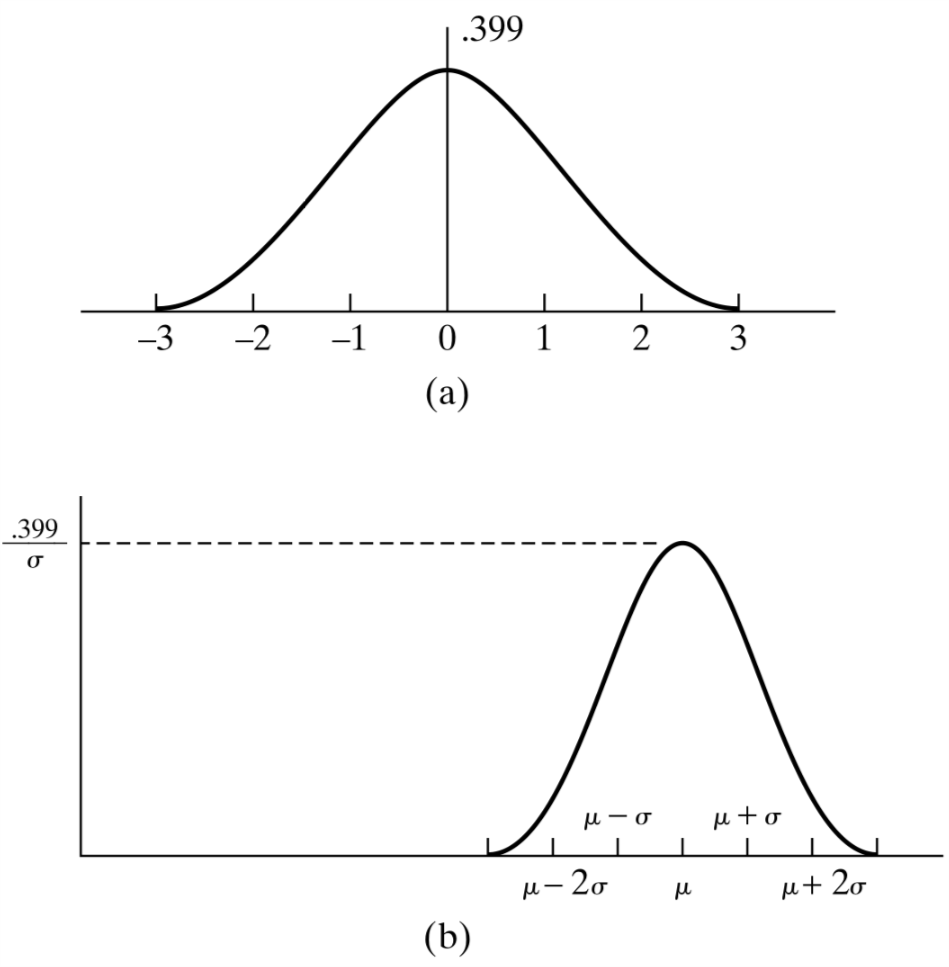

高斯随机变量
八卦一下 ，高斯随机变量不是高斯发现的，是一个叫亚伯拉罕\(cdot\)棣莫弗的数学家发现的。无论哪个发现的高斯随机变量，都不影响高斯随机变量在概率论中的重要地位。
1 定义
如果随机变量\(X\)的概率密度函数是：
\begin{equation} \label{eq:1} f(x) = \frac{1}{\sqrt{2\pi \sigma^{2}}}e^{-\frac{(x-\mu)^{2}}{2\sigma^{2}}}, -\infty < x < \infty \end{equation}称这个随机变量服从参数为\(\mu\)和\(\sigma^{2}\)的高斯分布。稍后我们会发现\(\mu\)和\(\sigma^{2}\)在完全控制一个高斯变量，他们分别是该高斯变量的均值和方差。无论\(\mu\)和\(\sigma^{2}\)的值如何变化，高斯随机变量的图形始终是钟形。如图所示。

图 1: 高斯随机变量的形状
\(f(x)\)是一个概率密度函数，我们可以通过\(\int_{-\infty}^{\infty}f(x)dx = 1\)来验证。
\begin{equation} \label{eq:2} \frac{1}{\sqrt{2\pi}\sigma}\int_{-\infty}^{\infty} e^{-\frac{(x-\mu)^{2}}{2\sigma^{2}}}dx = 1 \end{equation}变量替换，令\(y = \tfrac{x-\mu}{\sigma}\)，式 (\ref{eq:2})可以变为：
\begin{equation} \label{eq:3} \frac{1}{\sqrt{2\pi}}\int_{-\infty}^{\infty} e^{-y^{2}/2}dy = 1 \end{equation}即，我们需要证明
\begin{equation} \label{eq:4} \int_{-\infty}^{\infty} e^{-y^{2}/2}dy = \sqrt{2\pi} \end{equation}这个积分非常有意思，令\(I = \int_{-\infty}^{\infty} e^{-y^{2}/2}dy\)，则：
\begin{equation} \label{eq:5} I^{2} = \int_{-\infty}^{\infty} e^{-y^{2}/2}dy \int_{-\infty}^{\infty} e^{-x^{2}/2}dx \end{equation}我们利用左边变换来求解上面的二重积分，令：
\begin{eqnarray} \label{eq:6} x&=&r\cos\theta \\ y&=&r\sin\theta \end{eqnarray}则\(dxdy = rd\theta dr\)，所以有：
\begin{equation} \label{eq:7} I^{2} = \int_{0}^{\infty}\int_{0}^{2\pi}e^{-r^{2}/2}rd\theta dr = 2\pi \int_{0}^{\infty}re^{-r^{2}/2}dr = 2\pi \end{equation}因此\(I = \sqrt{2\pi}\)
2 正态分布的性质
2.1 期望和方差
先从标准正态分布的期望和方差开始，由于：
\begin{equation} \label{eq:8} E[X] = \frac{1}{\sqrt{2\pi}}\int_{-\infty}^{\infty} xe^{-x^{2}/2}dx = 0 \end{equation} \begin{equation} \label{eq:9} \mathrm{Var}[X] = \frac{1}{\sqrt{2\pi}}\int_{-\infty}^{\infty} x^{2} e^{-x^{2}/2}dx \end{equation}分部积分，我们得到\(\mathrm{Var}(X) = 1\)
2.2 正态分布的线性函数
如果\(X\)是一个服从参数为\(\mu\)和\(\sigma^{2}\)的正态分布的随机变量，那么\(aX + b\)也服从正态分布，且参数为\(a\mu + b\)和\(a^{2}\sigma^{2}\)。设\(F_{Y}\)为\(Y\)的分布函数，则：
\begin{equation} \label{eq:10} F^{Y}(x) = P\{Y\leq x\} = P\{ aX + b \leq x\} = P\{ X \leq \frac{x-b}{a}\} = F_{x}(\frac{x-b}{a}) \end{equation}其中\(F_{X}(x)\)为\(X\)的分布函数，求导可得\(Y\)的密度函数：
\begin{eqnarray} \label{eq:11} f_{Y}(x)&=& \frac{1}{a}f_{x}(\frac{x-b}{a}) \\ &=& \frac{1}{\sqrt{2\pi}a\sigma}e^{-\frac{ (\frac{x-b}{a}-\mu)^{2} }{2\sigma^{2}}} \\ &=& \frac{1}{\sqrt{2\pi}a\sigma}e^{-\frac{(x-b-a\mu)^{2}}{2(a\sigma)^{2}}} \end{eqnarray}即，假设\(X\)是均值为\(\mu\)方差为\(\sigma^{2}\)的高斯变量，则\(aX + b\)则是一个均值为\(a\mu + b\)方差为\(a^{2}\sigma^{2}\)的高斯变量。这个结论的一个重要应用是，如果\(X\)是一个参数为\(\mu,\sigma^{2}\)的正态随机变量，那么\(Z = \tfrac{X-a}{\sigma}\)是一个参数为\((0,1)\)的正态随机变量。参数为\((0,1)\)的正态随机变量成为标准正态随机变量。
3 棣莫弗拉普拉斯极限定理
概率论中一个重要的结论就是棣莫弗拉普拉斯极限定理，它表明当\(n\)充分大时，参数为\(n,p\)的二项随机变量可以由正态随机变量来近似，其中正态随机变量的期望和方差与二项随机变量的期望和方差相同。更一般的表述：我们可以将二项随机变量标准化，先减去均值\(np\)，然后再除以标准差\(\sqrt{np(1-p)}\)，那么经过标准化后的随机变量的分布函数当\(n\to \infty\)时收敛于标准正态分布。
在\(n\)次独立重复试验中，设每次成功的概率为\(p\)，记成功的总次数为\(S_{n}\)，那么对于任意\(a < b\)有：当(n→ ∞)时，
\begin{equation} \label{eq:12} P\bigg\{a\leq \frac{S_{n}-np}{\sqrt{np(1-p)}} \leq b\bigg\} \to \Phi(b) - \Phi(a) \end{equation}现在，二项分布有两种可能的近似：当\(n\)较大\(p\)较小时，泊松分布 是一个很好的近似；另外，可以证明，当\(np(1-p)\)较大时，正态分布近似的效果很好。一般情况下，当\(np(1-p) \geq 10\)时，正态近似就非常好。